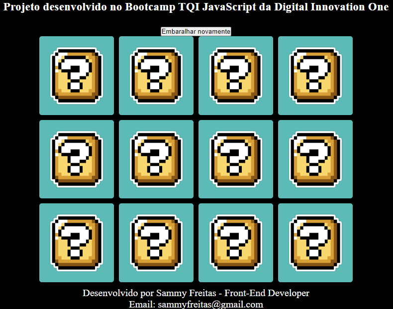

Jogo da Memória do SuperMario
🚀 DESAFIO: Bootcamp TQI Fullstack Developer - DIO:
Nesse projeto, o desafio será criar um jogo da memória utilizando apenas HTML, CSS e Javascript. Com poucas linhas de código, aprenderemos juntos a trabalhar com efeitos 3D no CSS e lógica de programação utilizando condicionais, Immediately Invoked Function Expression e manipulação de Array em um projeto super divertido.
Competências técnicas: 
- HTML,
- CSS,
- JavaScript,
- Git